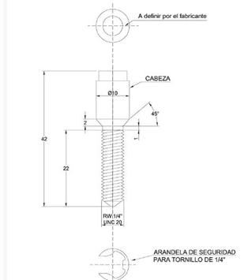
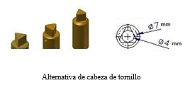
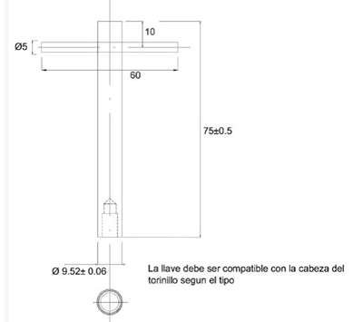

Siempre es más fácil conocer las normas ENEL-CODENSA
Rolex Rolex gold watch, compared with ordinary materials, gold watches are often expensive, but the replica rolex gold watch has the role of swiss replica watches hedging, so that it often becomes the first choice for collectors. The gold watch has value in the world, largely because the omega replica watch brand launched a commemorative limited edition watch or a replica hublot complex movement process or artistic attainments deep watches, mostly preferred gold precious metals such material. These watches tend to have a strong hedging function, therefore, Rolex Rolex gold watch reputation.

ET944 Cerradura electromecánica
Datos adicionales
Número de especificación
ET944
Fecha de vigencia
22/01/2020
Herramientas adicionales
- Contenido Ocultar
- 1. OBJETIVO
- 2. ALCANCE
- 3. CONDICIONES DE SERVICIO
- 4. SISTEMAS DE UNIDADES
- 5. NORMAS DE FABRICACIÓN Y PRUEBAS
- 6. REQUERIMIENTOS TÉCNICOS PARTICULARES
- 6.1 CARACTERÍSTICAS GENERALES
- 6.2 CARACTERÍSTICAS GEOMÉTRICAS Y DE CONSTRUCCIÓN
- 6.3 REQUERIMIENTOS FUNCIONALES
- 6.4 IDENTIFICACIÓN
- 7. CRITERIOS DE ACEPTACIÓN O RECHAZO
- 7.1 MUESTREO
- 7.2 ACEPTACIÓN O RECHAZO
- 8. PRUEBAS
- 8.1 INSPECCIÓN DIMENSIONAL
- 8.2 INSPECCIÓN VISUAL
- 8.3 INSPECCIÓN FUNCIONAL
- 8.4 PRUEBA CONTRA IMPACTO (CÓDIGO IK)
- 8.5 ENSAYO DE GRADO DE PROTECCIÓN (CÓDIGO IP)
- 9. EMPAQUE
- 10. GARANTÍA DE FÁBRICA
- 11. INSPECCIÓN EN FÁBRICA
- 12. PRESENTACIÓN DE LAS OFERTA
1. OBJETIVO
Establecer las condiciones que deben satisfacer las cerraduras electromecánicas a ser instaladas en celdas o gabinetes, las cuales deben poseer excelentes características técnicas de desempeño, durabilidad y calidad para cumplir las condiciones actuales de operación en los sistemas de distribución y comercialización de energía.2. ALCANCE
La presente especificación se aplicará a todas las cerraduras electromecánicas que adquiera Enel Codensa.3. CONDICIONES DE SERVICIO
Las cerraduras electromecánicas serán utilizadas en el sistema de baja tensión del área de concesión de Enel Codensa, bajo las siguientes condiciones:| CARACTERÍSTICAS AMBIENTALES | |
| Altura sobre el nivel del mar | 2700 |
| Ambiente | Tropical |
| Humedad | Mayor al 90% |
| Temperatura máxima y mínima | 45 °C y -5 °C |
| Instalación | En celdas o gabinetes |
| CARACTERÍSTICAS ELÉCTRICAS | |
| tensión nominal del sistema | 120/208 V – 277/480 V |
| Tensión máxima | 600 |
| Disposición del sistema | Tetrafilar (3 fase – 4 hilos) |
| Frecuencia del sistema | 60 Hz |
4. SISTEMAS DE UNIDADES
En todos los documentos técnicos se deben expresar las cantidades numéricas en unidades del sistema Internacional (S.I.). Si se usan catálogos, folletos o planos, en sistemas diferentes de unidades, deben hacerse las conversiones respectivas.| NORMA | DESCRIPCIÓN |
| NTC IEC 60529 | Grados de protección dados por encerramientos de equipo eléctrico (Código IP). |
| NTC IEC 62262 | Grados de protección proporcionados por los encerramientos de equipos eléctricos contra los impactos mecánicos externos (Código IK) |
| NTC IEC 61439-1 | Conjuntos de equipos de baja tensión. Parte 1: Reglas generales. |
| NTC ISO 2859-1 | Procedimientos de muestreo para inspección por atributos. Parte 1: Planes de muestreo determinados por el nivel aceptable de calidad -NAC- para inspección lote a lote. |
| NTC 1156 | Procedimiento para el ensayo de la cámara salina. (Documento de referencia ASTM B117:95) |
| NTC 3916 | Método de ensayo para la resistencia a la tracción de recubrimientos, utilizando probadores portátiles de adherencia. |
| ASTM D1400 | Standard Test Method for Nondestructive Measurement of Dry Film Thickness of Nonconductive Coatings Applied to a Nonferrous Metal Base |
| NTC 422 | Perfiles livianos y barras de acero al carbono acabadas en frío |
| NTC 858 | Pernos y tuercas |
5. NORMAS DE FABRICACIÓN Y PRUEBAS
Pueden emplearse otras normas internacionalmente reconocidas equivalentes o superiores a las aquí señaladas, siempre y cuando se ajusten a lo solicitado en la presente especificación técnica.Las normas citadas en la presente especificación (o cualquier otra que llegare a ser aceptada por Enel Codensa) se refieren a su última revisión.
6. REQUERIMIENTOS TÉCNICOS PARTICULARES
6.1 CARACTERÍSTICAS GENERALES
Las cerraduras electromecánicas requeridas por Enel Codensa deben cumplir con las siguientes condiciones:a. Construida con materiales de la mejor calidad debiéndose descartar el empleo de materiales alterables por la humedad, radiación solar y otras condiciones ambientales desfavorables.
b. Autosoportable, compacta, liviana y con una estructura completamente rígida e indeformable, sin aristas, bordes ni esquinas vivas, agudas o cortantes.
c. Índice de hermeticidad mínimo de IP51 de acuerdo a la norma NTC IEC 60529 y con grado de protección contra choques IK 10 (20 julios), para La caja donde se alojen elementos eléctricos o electrónicos.
d. Mecanismo de brazos verticales que permiten asegurar la puerta en la parte central y en sus extremos superior e inferior, con bloqueo motorizado o de sistema magnético para accionamiento remoto.
e. Tensión de alimentación 8VDC a 24 VDC
f. Consumo máximo de 4 A, en el momento de la operación de apertura o cierre
6.2 CARACTERÍSTICAS GEOMÉTRICAS Y DE CONSTRUCCIÓN
La cerradura será de la forma, distribución y dimensiones que se muestran en las siguientes figuras:


NOTA: Dimensiones en mm
6.3 REQUERIMIENTOS FUNCIONALES
La cerradura debe tener las siguientes funcionalidades:a. La cerradura solo se debe poder operar:
- Con autorización y desbloqueo remoto desde Centro de Monitoreo
- Desbloqueo desde Smart Phone con códigos de seguridad previamente suministrados a la cuadrilla que operará la cerradura.
b. Posterior a la autorización el Centro de Monitoreo o desde el Smart Phone en terreno se envía comando para desbloquear el accionamiento mecánico de la cerradura.
En las siguientes figuras se presenta el tornillo y la llave de seguridad que se utiliza normalmente en las operaciones de Enel Codensa, llave con la cual se operará la cerradura, una vez se haya desbloqueado el accionamiento mecánico.
La cerradura debe poseer un mecanismo similar a la cabeza del tornillo de seguridad para poder ser operada con la llave correspondiente.



c. Para eventualidades donde se tengan inconvenientes de comunicaciones para el envío del comando de desbloqueo o que se tenga algún inconveniente mecánico que no permita el accionamiento con la llave de seguridad, debe tener la posibilidad de abrirla con llave especial de alta seguridad.
d. Para el cierre de la cerradura se debe garantizar que la puerta de la celda este cerrada, lo cual se garantiza con:
- Señal de sensor de fin de carrera instalado en la celda
- Señal de sensor interno de la cerradura, el cual se activa y envía señal cuando la puerta de la celda este completamente cerrada.
e. La cerradura debe generar señales, que permita de forma remota validar si está cerrada o abierta
6.4 IDENTIFICACIÓN
La cerradura tendrá grabado:a. Inscripción en letras mayúsculas que diga “USO EXCLUSIVO DE ENEL CODENSA”.
b. Logotipo o nombre del fabricante, el tamaño de la letra será de 6mm mínimo.
c. Año y mes de fabricación para identificar el lote
d. Serie
7. CRITERIOS DE ACEPTACIÓN O RECHAZO
Para este caso se considerará que existe un lote cuando:a. Los materiales de producción pertenecen a un mismo lote de materia prima.
b. Las cerraduras se construyen en un solo lote de producción.
7.1 MUESTREO
El muestreo se realizará con base en los procedimientos y tablas estipuladas en la norma NTC-ISO 2859-1 y se acordará por las partes, previamente a la fecha de la realización de las pruebas y recepción de los bienes.Para el desarrollo de las pruebas es indispensable que los instrumentos involucrados estén calibrados.
7.2 ACEPTACIÓN O RECHAZO
Si el número de elementos defectuosos es menor o igual al correspondiente número de defectuosos (dado en la norma NTC-ISO 2859-1 en la tercera columna de las tablas 1 y 2), se deberá considerar que el lote cumple con los requisitos técnicos exigidos por Enel Codensa, en caso contrario, el lote se rechazará.| TAMAÑO DEL LOTE | TAMAÑO DE LA MUESTRA | NUMERO PERMITIDO DE DEFECTUOSOS | NUMERO DEFECTUOSOS PARA RECHAZO |
| 2 a 8 | A = 2 | 0 | 1 |
| 9 a 15 | B = 3 | 0 | 1 |
| 16 a 25 | C = 5 | 0 | 1 |
| 26 a 50 | D = 8 | 1 | 2 |
| 51 a 90 | E = 13 | 1 | 2 |
| 91 a 150 | F = 20 | 1 | 2 |
| 151 a 280 | G = 32 | 2 | 3 |
| 281 a 500 | H = 50 | 3 | 4 |
| 501 a 1200 | J = 80 | 5 | 6 |
| 1201 a 3200 | K = 125 | 7 | 8 |
| 3201 a 10000 | L = 200 | 10 | 11 |
| TAMAÑO DEL | TAMAÑO DE LA MUESTRA | NUMERO PERMITIDO DE DEFECTUOSOS | NUMERO DEFECTUOSOS PARA RECHAZO |
| LOTE | |||
| 2 a 8 | A = 2 | 0 | 1 |
| 9 a 15 | A = 2 | 0 | 1 |
| 16 a 25 | B = 3 | 0 | 1 |
| 26 a 50 | B = 3 | 0 | 1 |
| 51 a 90 | C = 5 | 1 | 2 |
| 91 a 150 | C = 5 | 1 | 2 |
| 151 a 280 | D = 8 | 1 | 2 |
| 281 a 500 | D = 8 | 1 | 2 |
| 501 a 1200 | E = 13 | 1 | 2 |
| 1201 a 3200 | E = 13 | 1 | 2 |
| 3201 a 10000 | F = 20 | 1 | 2 |
(NIVEL DE INSPECCIÓN ESPECIAL S-3, NAC = 2,5%) (NORMA NTC-ISO 2859-1 TABLA1 –
TABLA 2A)*
8. PRUEBAS
El fabricante deberá remitir los protocolos de los siguientes ensayos realizados por un laboratorio acreditado ante el Organismo Nacional de Acreditación de Colombia-ONAC, o un organismo internacional reconocido para la elaboración de pruebas.Las celdas deben cumplir con:
a. Inspección dimensional, inspección visual y funcional
b. Prueba contra impacto (código IK), para accionamiento electromecánico
c. Ensayo de grado de protección (código IP), para accionamiento electromecánico
8.1 INSPECCIÓN DIMENSIONAL
La verificación de las dimensiones se hará con los instrumentos de medida que den la aproximación requerida (cinta metálica con divisiones de 1 mm para longitudes, calibrador para los diámetros y espesores). El tamaño de la muestra deberá estar de acuerdo con la tabla 1.Se verificará con base a:
- Esquemas indicados en las figuras anexas a la presente especificación, numeral 6.2.
- Planos entregados por el fabricante y aprobados por Enel Codensa.
La tolerancia permitida es de ±1 mm,
8.2 INSPECCIÓN VISUAL
Se verificarán:a. Las marcaciones descritas en el numeral 6.4.
b. La buena terminación de todos los elementos
8.3 INSPECCIÓN FUNCIONAL
Se debe validar que cumpla con los requerimientos indicados en el numeral 6.3.8.4 PRUEBA CONTRA IMPACTO (CÓDIGO IK)
El accionamiento electromecánico debe ser resistentes al impacto de un martillo pendular de 5kg a 20 julios. Luego del impacto, la tapa debe conservar su grado de protección IP manteniendo su funcionalidad. Adicionalmente, no se deben presentar roturas en ninguna parte de la caja del accionamiento electromecánico.8.5 ENSAYO DE GRADO DE PROTECCIÓN (CÓDIGO IP)
El índice de hermeticidad será IP51, este grado de protección se verificará de acuerdo a la norma IEC 60529, para el accionamiento electromecánico.9. EMPAQUE
Las cerraduras deben protegerse contra y daños dentro del transporte, para esto cada una debe embalarse en una caja de cartón grueso ralladuras, en cuyo exterior debe indicarse en forma impresa el “nombre del fabricante”, propiedad de “Enel Codensa”, descripción del producto, número de contrato y código de inventario Enel Codensa.Para el transporte debe embalarse en estibas con un número de unidades no mayor a 90 unidades por estiba y la estiba recubierta y sellada con material plástico, sobre el cual se adherirá una etiqueta de por lo menos 30 x 30 cm que indique que no se puede almacenar más de dos estibas en sentido vertical.
10. GARANTÍA DE FÁBRICA
Enel Codensa requiere como mínimo, un período de garantía de fábrica de cinco (5) años, a partir de la entrega de los bienes.11. INSPECCIÓN EN FÁBRICA
El proveedor cargara la información correspondiente en CQF, con no menos de quince (15) días calendario de anticipación, con el fin de que Enel Codensa realice programación de recepción en fábrica.El valor de las pruebas y ensayos debe incluirse en los precios cotizados en la propuesta. Enel Codensa se reserva el derecho de descartar las propuestas que no ofrezcan pruebas, o si las ofrecidas son consideradas insuficientes para garantizar la calidad de las cerraduras.
12. PRESENTACIÓN DE LAS OFERTA
El oferente deberá presentar su oferta técnica (en medio impreso) con la siguiente información:- Relación de los bienes cotizados.
- Información del oferente.
- Planillas de características técnicas garantizadas, la cual deberá ser diligenciada completamente en Excel, firmada y sellada por el oferente.
- Excepciones técnicas: apartado en el cual se deben relacionar las excepciones de carácter exclusivamente técnico de la oferta, respecto a los bienes solicitados. Si la oferta no presenta excepción, se indicaría expresamente en el mismo “NO HAY EXCEPCIONES”
- Relación de los ensayos realizados a las cerraduras y a sus accesorios de acuerdo con lo indicado en el apartado 8 de la presente especificación. En estos protocolos se deberán anotar las fechas de fabricación y de realización de las pruebas, para permitir la verificación de las características técnicas garantizadas.
- Certificación del sistema de calidad.
- Relación de clientes, evidencia de su capacidad técnica y experiencias relacionadas con los materiales y/o equipos cotizados.
- Carta de garantía de los bienes cotizados.
- Relación de normas técnicas aplicables a los bienes cotizados.
- Catálogos originales completos y actualizados del fabricante, que correspondan a los bienes cotizados.
- Información adicional que se considere aporta explicación al diseño de la cerradura (dibujos, detalles, dimensiones y pesos de los materiales ofertados), así como las instrucciones de instalación, características de operación y mantenimiento.
En caso que se requiera se podrán exigir muestras de cada una de las referencias ofertadas sin cargo a devolución, con cada una de las características técnicas, solicitadas y mencionadas en la presente especificación.
Enel Codensa se reserva el derecho de descartar las propuestas que no ofrezcan pruebas o si las ofrecidas son consideradas insuficientes para garantizar la calidad de las cerraduras.
ANEXO 1. CARACTERISTICAS TÉCNICAS GARANTIZADAS
| N° | DESCRIPCION | REQUERIDO | OFERTADO |
| 1 | Proponente | País de fabricación | |
| Fabricante | |||
| 2 | Normas | Fabricación y pruebas | |
| 3 | Temperatura de operación | 45 °C y -5 °C | |
| 4 | Frecuencia nominal | 60 Hz | |
| 5 | Características básicas | ||
| 5.1 | Grado de protección | IP 51 | |
| 5.2 | Consumo máximo al momento de operación de apertura o cierre | 4:00 AM | |
| 5.3 | Tensión de alimentación | 8 VDC a 24 VDC | |
| 5.4 | Material caja de accionamiento electromecánico | Latón o acero | |
| 5.5 | Material de los brazos de la cerradura | Acero inoxidable | |
| 5.6 | Peso máximo | 5 kg | |
| 6 | Dimensiones (mm) | ||
| 6.1 | Longitud con brazos elongados | 518 | |
| 62 | Longitudes con brazos contraídos | 472 | |
| 6.3 | Ancho de caja de accionamiento electromecánico | 99 | |
| 6.4 | Dimensiones y perforaciones | Indicadas en figuras de ítem 6.2 | |
| 7 | Funcionalidades | ||
| 7.1 | Apertura | Solo con autorización (comando remoto) del Centro de Gestión de la Medida y desde Smart Phone con códigos de seguridad previamente suministrados a la cuadrilla que operará la cerradura | |
| 7.2 | Operación normal | Operación con llave de seguridad | |
| 7.3 | Para eventualidades donde se tengan inconvenientes de comunicaciones para el envío del comando de desbloqueo o que se tenga algún inconveniente mecánico que no permita el accionamiento con la llave de seguridad. | Operación con especial de alta seguridad | |
| 7.4 | Para el cierre de la cerradura debe garantizar que la puerta de la celda este cerrada, lo cual se garantiza con: | · Señal de sensor de fin de carrera instalado en la celda | |
| · Señal de sensor interno de la cerradura, el cual se activa y envía señal cuando la puerta de la celda este completamente cerrada. | |||
| 7.5 | Estado de la cerradura | La cerradura debe generar señales, que permita de forma remota validar si está cerrada o abierta | |
| 8 | Llave de alta seguridad | ||
| 8.1 | Duplicación | No debe ser de fácil de duplicación por cerrajería convencional | |
| 8.2 | Extracción | Solamente en posición cerrada | |
| 8.3 | Duplicación | Restringida, solamente con autorización expresa de Enel Codensa. | |
| 9 | Ensayos/pruebas | Están incluidas en el precio de las cerraduras (Si/No) | |
| 10 | Garantía | Mínimo 5 años |